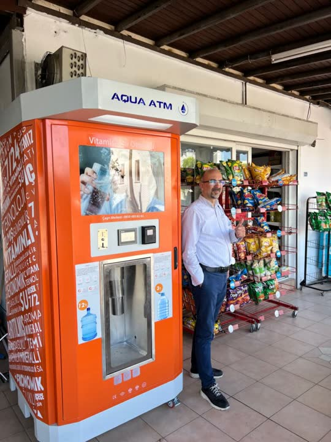
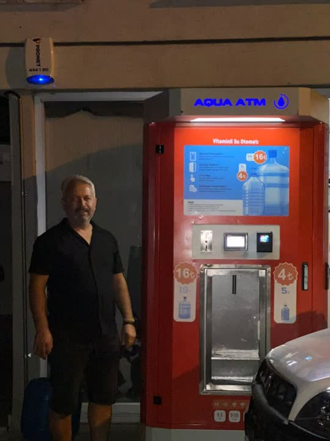
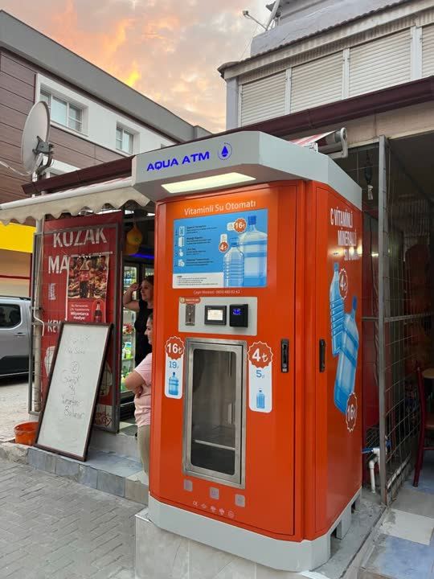
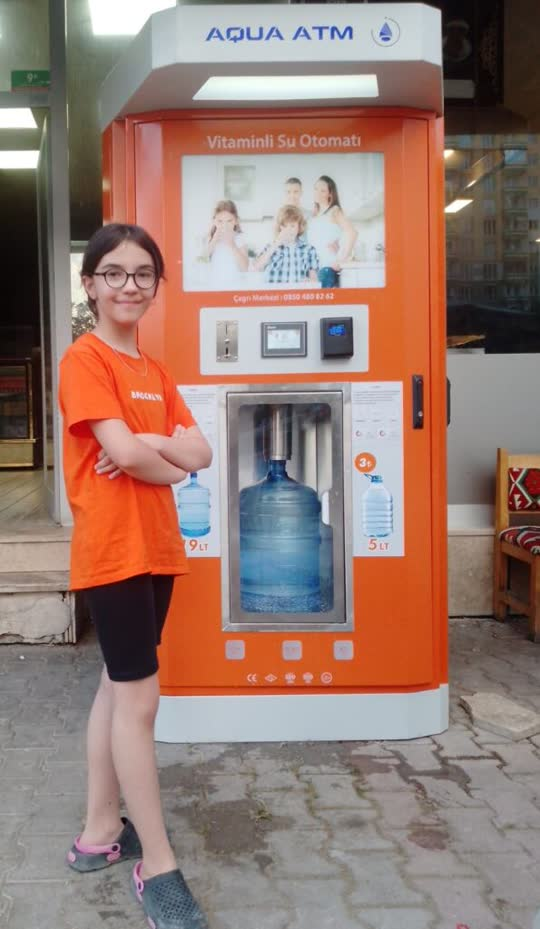

Aqua ATM C vitaminli su otomatı: şişeni getir, 5 ya da 19 litre doldur. Siz lokasyonu sağlayın; kurulum, teknik destek ve lokasyon analizini biz yapalım.
"Ayda şu kadar kazanırsınız" demek yerine ziyaretçinin kendi lokasyonuna göre hesap yapmasını sağlıyoruz. Bu hem güven verir hem de yanlış beklentiyle gelen başvuruları azaltır.
Hesaplama sizin girdiğiniz değerlere dayanır, kazanç taahhüdü değildir. Gerçek satış lokasyon, mevsim ve bölgeye göre değişir; Aqua ATM ekibi lokasyon analizinde bölgenizdeki benzer cihazların verisini paylaşır.
Bu hesapla başvur5 soruyu yanıtlayın, lokasyonunuzun ön puanını görün. Puan yüksekse bölge temsilcisi 24 saat içinde arar.
Bölge, geçiş yoğunluğu, rakip otomatlar ve görünürlük değerlendirilir.
Vergi levhası (NACE 479910 + gıda), belediye izni / işgaliye; hepsi kontrol listesiyle.
Cihaz teslimi, su ve elektrik bağlantısı, test dolumu, ozon ve UV kontrolü.
Google Haritalar kaydı, cihaz QR sayfası ve mahalleye açılış duyurusu bizden.
Bayi panelinden satış, filtre zamanı ve arıza takibi; teknik ekip bir tık uzakta.




Her il ve büyük ilçe için ayrı sayfa: o şehirdeki aktif cihazlar, uygun lokasyon tipleri, belediye işgaliye süreci, yerel SSS. Google'da "su otomatı bayilik + şehir" aramalarında görünürlüğün temeli budur.
Vergi levhanızda otomatik satış makineleriyle perakende ticaret (NACE 479910) ve gıda faaliyeti bulunmalı. Belediye alanına konumlandırma için işgaliye izni gerekir.
Kendi işletmenize bitişik ya da belediyeden kiralanan bir alana. Lokasyon testinden sonra ekibimiz istatistikle önerir.
Şebeke suyu NSF sertifikalı filtreler ve endüstriyel membrandan geçer, mineral dengesi ve C vitamini eklenir, UV ile tekrar dezenfekte edilir; şişe dolum öncesi ozonla temizlenir.
Madeni para, kağıt para; isteğe bağlı kredi kartı.
Evet. Cihaz ekranında kendi işletmenizin ya da çevredeki işletmelerin reklamını yayınlayabilirsiniz.